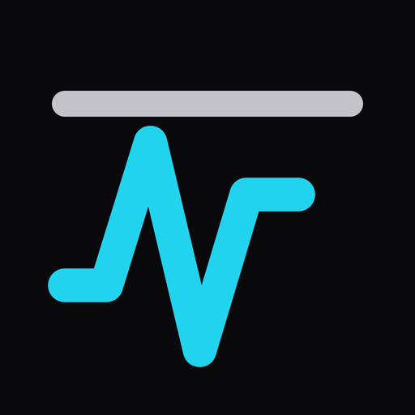
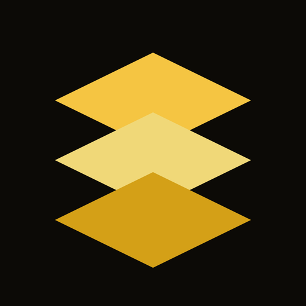

Product favicons stay softly rounded. Org avatars are full-bleed squares (rx=0). Upload the *-avatar-1024.png files on each org profile.

High-Signal-App sharp corners · no tile radius
sass-maker sharp corners · no tile radius